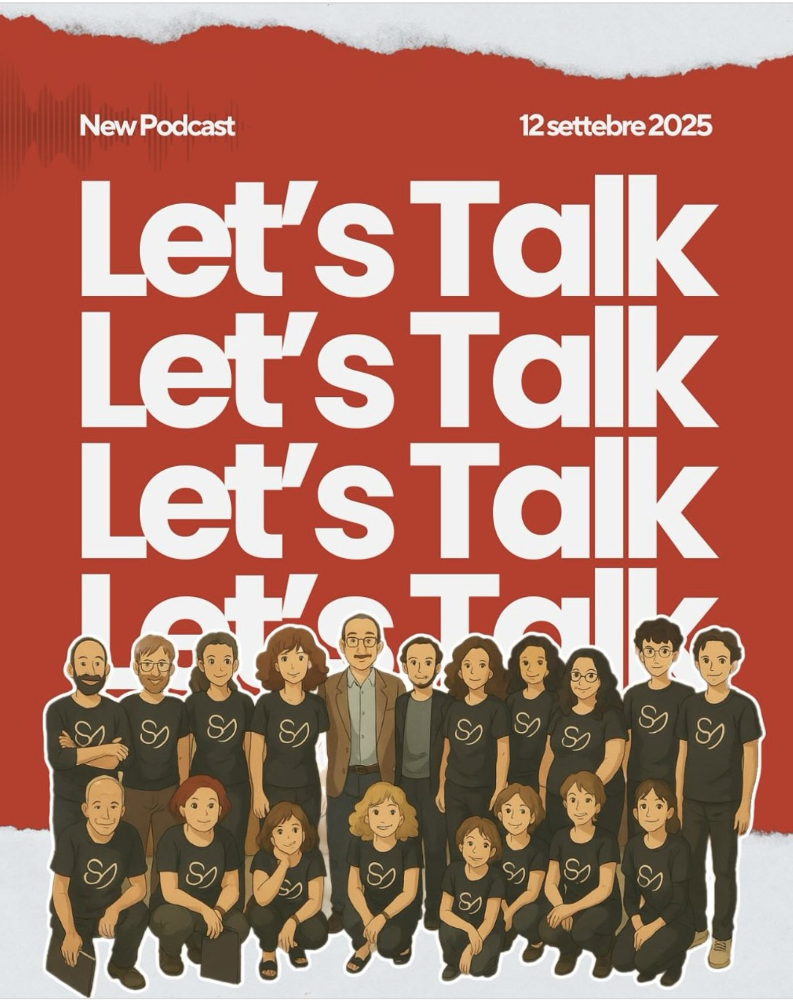

Il ControCoro è un coro amatoriale aperto a tutti. Siamo nati tra le mura di Spin Time, un'occupazione abitativa che è anche un vivace polo culturale. Dirige l'etnomusicologo Alberto Annarilli (che quando non sta dirigendo noi insegna a Tor Vergata). Spaziamo dal Rinascimento al Gospel, con tappe nella musica popolare.
Chi siamo 01

I nostri valori 02
I nostri valori: antifascista, aperto a tuttə, per musicisti e no, accogliente, laico, rispettoso, accessibile, orizzontale, partecipativo, antirazzista, antisessista.
Il direttivo 03
Dove siamo 04
Spin Time oggi è a tutti gli effetti un modello di autorecupero ed un esempio di rigenerazione urbana, uno spazio polifunzionale la cui governance è condivisa fra gli attori che ne compongono l'ecosistema e le cui porte sono di fatto sempre aperte alla città.
Una bussola nella discussione sul diritto all'abitare, un punto di riferimento per tutto il quartiere dell'Esquilino. Offerta sociale e culturale, servizi accessibili, un luogo che continua a rimettersi in discussione, a darsi nuovi stimoli e obiettivi.
Tutto questo anche grazie alle tante realtà che hanno supportato e deciso di contribuire al progetto, a partire dalla Fondazione Charlemagne e al programma 'periferiacapitale'.
Il tasso di dispersione scolastica dentro Spin Time è dello 0%, a fronte del 10,7% su Roma. Il 67% dei minori partecipano ad attività extrascolastiche. Questi dati non solo hanno un valore assoluto molto positivo, ma se messi in relazione all'estrazione socio-economica delle famiglie e dei minori rappresentano forse il più grande successo del modello Spin Time. L'esistenza di tale scenario positivo è giustificabile da tre principali fattori: la presenza dello stabile in un Municipio centrale, la folta rete di relazione sociali in cui sono inseriti i nuclei familiari e la presenza di un'attiva comunità educante interna.
Il repertorio 05
Concerti 06
Il Podcast 07
CONTROCORE è un dono al e un reportage sul ControCoro. Una frattura tra piani d'esistenza fatta di pensieri, musica, canto corale, gentilezza, resistenza, non univocità, senso di comunità, impegno sociale. Ha un titolo semplice, sintetico, solido, postromantico... Vabbè, facciamo che te lo ascolti e aggiungi anche tu un sottotitolo.
